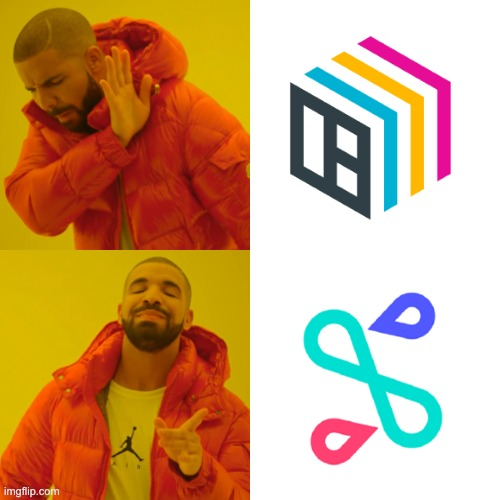

Như đề cập ở bài blog trước, mặc dù là một framework đơn giản và mạnh mẽ, song BentoML chưa hỗ trợ một số features hay ho như horizontal scaling, hay blue-green deployment. Seldon Core có thể được sử dụng như một giải pháp thay thế, tuy nhiên yêu cầu nhiều kiến thức hơn về Devops cũng như Kubernetes.

Seldon Core
Seldon Core là một framework giúp đóng gói và deploy các model trên Kubernetes một cách dễ dàng. Công cụ này cũng hỗ trợ nhiều features nâng cao như: monitoring, logging, explainers, AB test, vân vân và mây mây.
Quick start
Seldon Core cung cấp sẵn prepackaged server, cho phép user chỉ cần định nghĩa đường dẫn tới model weight (Line 12) và deploy. Đường dẫn này cần chứa 2 files sau: model.joblib (model weight), và metadata.yaml (metadata của model)
Sử dụng prepackaged model server giúp chúng ta chỉ cần quan tâm tới training model để ra được weight, mà không cần quan tâm tới việc code phần API cho model inference. Tuy nhiên, trong thực tế, đôi khi model inference không chỉ đơn giản là clf.predict(), và khi đó chúng ta cần phải customize model server như ví dụ dưới đây:
Trước hết chúng ta sẽ chuẩn bị phần inference code để xử lý các request tới API
defpredict(self, X, names=[], meta=[]): logging.info(f"model features: {X}") logging.info(f"model names: {names}") logging.info(f"model meta: {meta}") try: result = self._joblib.predict(X) return result except Exception as ex: logging.exception("Exception during predict")
Seldon Core hỗ trợ build 2 loại model server: reusable và non-reusable. Ở ví dụ trên, Line 6 load từ GCS (remote storage) nên là reusable server, nếu load từ file trong image thì sẽ là non-reusable. Hàm load() được đặt trong hàm __init__() do chúng ta muốn load model một lần, trong khi khởi tạo pod.
Cuối cùng chúng ta sẽ viết hàm predict() như Line 16 để mỗi khi có request tới thì hàm này sẽ xử lý. Các bác có thể thấy hàm này nhận 3 params là:
X: (prediction data đã được Seldon Core tự động chuyển đổi qua dạng numpy array)
names: tên của các cột tương ứng trong X
meta: các thông tin khác
Tiếp theo chúng ta sẽ chuẩn bị một file Dockerfile đơn giản, giúp package đoạn code inference trên thành Docker image để đem đi deploy.